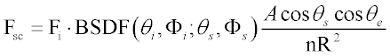
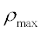
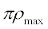

Specifies importance area or direction sampling for scattered rays. Required when
specifying a SCATTER MODEL.
Syntax
TOWARDS [ EDGE ] i [ n f t ]
Importance Direction Modifiers:
TOWARDS X
Y
Z
-X
-Y
-Z
SPEC
REFL
TRAN
POINT
| Option | Description |
|---|
| EDGE | optional edge modifier |
| X, Y, Z, -X, -Y, -Z | importance coordinate direction |
| SPEC | specular direction |
| REFL | reflected direction |
| TRAN | transmitted direction |
| POINT | direction from ray point to entity I reference point |
| I | importance area EDGE number or name |
| n | number of randomly distributed scatter rays to be generated (default value
is 1) |
| f |
as an EDGE modifier: fractional lower importance area or direction band
(default is 0)
as a Direction modifier: cone half-angle in radians
|
| t |
as an EDGE modifier: fractional upper importance area or direction band
(default is 1)
as a Direction modifier: scattering directional parameter (default value is
1)
|
Remarks
- To produce scattered rays, SCATTER MODEL
m must be followed by the TOWARDS modifier.
- If reflective m and
transmissive m' scatter models are different, specify both.
- The TOWARDS modifier specifies an
importance edge or direction towards which rays are scattered. Up to 20 TOWARDS commands can be associated with one object
- If an EDGE or a number
follows the TOWARDS option, I specifies the EDGE number (relative or absolute) used as importance areas. If I is entered as a positive number, radiation is scattered towards the
designated real area; if I is negative, radiation is scattered
away from the designated virtual area. For best results, use only rectangular or
elliptical EDGEs.
- The entry n is the
number of randomly directed rays scattered into the importance area or importance
direction by each TOWARDS command.
- For EDGE scattering,
f and t are the fractional lower and upper
bounds (default 0 to 1) of the importance area relative to the defining edge.
- For directional scattering, f is the cone angle in radians into which rays are scattered. This angle
is measured from the surface normal (t=0) or from the specular direction (t=1).
- For directional scattering, t is a parameter that varies the scattering direction from the surface
normal (t=0) to the specified direction (t=1, default). A value of t=-1 corresponds to the retroreflection.
- Attempting to scatter below the horizon may
lead to an incorrect calculation of scattered flux. This situation occurs when some
portion of an importance EDGE or angular cone specification forms
an angle greater than π/2 with the local surface normal.
- ASAP does not take into account importance
areas whose solid angles overlap to maintain conservation of energy.
-
Flux assigned to each scattered ray is computed from the formula

where F1 is the incident flux, BSDF is the bidirectional scatter distribution
function, A is the importance edge area, R is the distance from scattering
surface to importance edge measured along the scattered ray trajectory, θ and φ
are polar and azimuthal angles, and the subscript I, s, and e indicate incident
angle, scatter angle and the angle between scattered ray and importance edge
normal, respectively.
- The number of scattered rays per incident
ray n affects both accuracy and raytrace time. A single scattered
ray per incident ray (n=1) is sufficient when the angle φ subtended by the
importance edge or importance direction is less than 0.1 radians. for φ>0.1, the
scattered flux will quickly converge towards a stable value as n
approaches 100Γ/π where Γ is the solid angle subtended by the importance edge or
importance direction. Use n>1 also in cases where the probability of a
scattered ray reaching the target is low, that is, when significant aberrations are
present. Finer sampling of the scattering surface is always recommended over
increasing the value of n in an effort to raise signal-to-noise
ratio.
-
When the MONTECARLO option is used with SPLIT, the
following guidelines should be applied:
- If the scattering surface has a
Lambertian model, then the entry for the number of rays n
should be 1. Entering a larger value of n will only slow
down the ray trace without improving the accuracy of the calculation.
- For surfaces that have a
non-Lambertian scatter model, the accuracy of the calculation improves as
the entry for the number of rays n increases.
- For non-Lambertian BRDFs, if the
maximum BRDF over all relevant angles of incidence and scatter is , then the
number of scattered rays n should be greater than .
- In most cases, the SPEC option should be used with scatter into the hemisphere above
the surface rather than an importance EDGE.
- If MONTECARLO is in effect, the
n parameter of the TOWARDS command specifies the
number of Monte Carlo trial rays for each scattered ray and should be chosen to be 1
if the scattering is Lambertian and otherwise at least π times the maximum value of
the BSDF over the solid angle of interest for scattering.
TOWARDS Examples